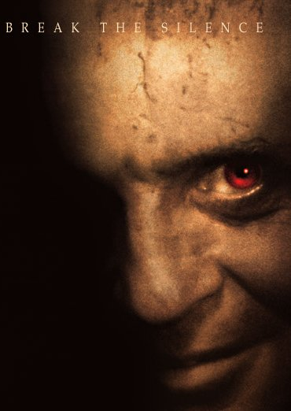
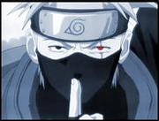

Forums galactiques > Taverne galactique : lieu de discussion informel > Description de votre personnage
| Naruse Réputation à la taverne : 1178  08/09 ETU 22:56 | Score : 3 Détails Fous toi des joueurs de Apo qui regarde Walker Texas Rangers (s'il y en a), mais je crois bien que tu dois être le seul à connaitre les paroles du générique.
Après si ce jeu ne te plais pas, c'est que tu dois te faire chier pour "insulter" (provoquer ??) les joueurs. Enfin chacun sa merde, comme on dit... | ||
| Naruse Réputation à la taverne : 1178 08/09 ETU 23:04 | Score : 2 Détails Il est facile de critiquer, quand on ne sait pas faire la même chose.
As-tu au moins compris le sens de RP (role-play) ?? Sachant que dans ce jeu, le RP est développé et que tu n'as pas l'air d'aimer ça (chacun ses goûts après tout), il va falloir m'expliquer ce que tu fais là. Jouer à un jeu que l'on n'aime pas. C'est un nouveau défi, challenge, pour voir celui qui va tenir le plus lontemps ?? Certains se plaisent à écrire des "pavés". Ce sont leurs goûts. Et ne pas respecter celà, est preuve d'une faible ouverture d'esprit. | ||
| -[Aerÿnn]- Réputation à la taverne : 2661  08/09 ETU 23:05  | Score : 1 Détails Bon..
Déjà commence (enfin si t'y arrives) à parler PO-LI-MENT, toi comprendre ça ? Non ? Bon j'aurais essayé... Enfin, qu'est-ce t'as contre les pavés ? Sont utiles les pavés, pour pas marcher sur la boue.. HRP : Les 'joueurs à pavés' (seigneur l'expression ^^), si ça leur plaît et que ce qu'ils écrivent plaisent, y'a pas de soucis... 1. Si t'aime pas, tu lis pas. 2. J'préfère les BONS pavés que les monolignes ou presque, spécial Tchat/Msn Conclu : Va sur un tchat MDR... Sur ce, bin salut, dois-je dire 'Bon jeu' ? En tout cas, j'ai fini sur ce topic pour ma part. | ||
| Eragon Ohen Réputation à la taverne : 466  08/09 ETU 23:26 | Score : 1 Détails Tu sais, si tu n'aime pas les pavés... a chercher du filet chez ton traiteur et ne t'occupe pas des pavés ;) De plus, si tu pense trouver des "pavé" ici, je ne t'inviterais pas sur certains forums RP que je connais, tu nommerais sa des montagnes... Vive le RP ^_^
Désoler pour le HRP... :/ | ||
| Ash Réputation à la taverne : 434  09/09 ETU 07:05 | Score : 0 Détails [HRP]
[Vulgaire] Ce mec est C-H-I-A-N-T! Alors je vous invite tous a voter "-" a ses posts, et aussi a cliquer sur le beau triangle jaune dans le coin gauche de la fenetre. Il faut savoir apprendre a parler legerement RP, meme si des fois on derive sur le HRP! Alors mon gars de 1) Apprends les bonnes manieres 2) Arrete de faire chier ton monde 3) Si t'es la pour une revanche, barre toi, car ca ne sert a rien De plus, les "paves" comme tu dis peuvent etre interessant. Bon c'est vrai qu'il y en a qui sont trop long et qui soulent, mais pour moi, entre voir une chose de 1 ligne, bacle, ecrit en sms et voir un looooong texte de 40 lignes, je prefere celui de 40 lignes. Je donne 1 Ma de leems a celui qui me donne son natal. [/Vulgaire] [/HRP] | ||
| Ash Réputation à la taverne : 434 09/09 ETU 10:21 | Score : 1 Détails C'est ferme...
Developpe l'hyperfusion ^^ Je veux bien venir faire un tour... Je t'enverrai des vaisseaux gratuitement... | ||
| Horohoro Réputation à la taverne : 1130  09/09 ETU 10:30 | Score : 0 Détails STOP AUX BOULETS!!!!!!
surtout sur mes topics... en plus,celui-là il est lourd(normal pour un boulet lol) donc je pense qu'on devrait demander à dieu d'interdire l'accès aux forums pour ceux qui sont en système fermés! | ||
| Abbadon Réputation à la taverne : 225  09/09 ETU 13:21 | Score : 0 Détails HRP et grossier:
La je crois que dans le genre connerie on dépasse les bornes. Vous ne voyez pas que ce couill*** ne fait ca que pour vous provoquer? Tant que vous lui répondrez, il continuera! Sinon ma pauvre tete de noeud, si t'aime pas apo, tu dégage!!!!!!!!!!!!!!!!!! (Oui j sais je pompe sur Sarko la mais bon) | ||
| Naruse Réputation à la taverne : 1178 09/09 ETU 13:52 | Score : 0 Détails Abbadon, comment as-tu fais pour deviner ça^^ ??
euh...c'est qui qui répond à sa provocation là ?? | ||
| Horohoro Réputation à la taverne : 1130 09/09 ETU 13:53 | Score : 0 Détails stop au floodsvp messieurs^^
| ||
| -[Aerÿnn]- Réputation à la taverne : 2661 12/09 ETU 10:36 | Score : 0 Détails Note : Description du perso, pas du joueur !
Bonjour ! N'hésitez pas à remplir cette fiche. Décrivez-vous, à vos plumes..? Go ! Nom : Prénom : Surnom : Age : Race : Titre : Couleur des yeux : Couleur des cheveux : Taille : Poids : Habits : Accessoires : Armes : Pouvoirs : | ||
| Arthérius Réputation à la taverne : 1559  12/09 ETU 11:39 | Score : 1 Détails Nom : Aucun
Prénom : Arthérius Surnom : Arthie , Arthé, le bourrin , ... Age : 20 Race : Humaine (barbare) Titre : Chevalier de l'ordre de la Wiverne (:p) Couleur des yeux : varie ( marron normalement, rouge si ca doit mal aller) Couleur des cheveux : Marron Taille : 1,85 Poids : 101 Kg ( de muscles principalement ) Habits : Pantalon symerrien Accessoires : bracelet de Félinia Armes : X350V2, bouclier ionique , Baton ionique également , mais aussi poings ( Je fracasse des CLA à mains nues lors de mes entrainements ) Pouvoirs : A le chic pour repousser les jolies jeunes femmes ... | ||
| Horohoro Réputation à la taverne : 1130 12/09 ETU 16:45 | Score : 0 Détails HRP:merci pour le up,Aërynn^^
| ||
| CalipsoOo Réputation à la taverne : 0  19/09 ETU 22:34 | Score : 0 Détails Nom :Akitsuki
Prénom :CalipsoOo Surnom :Cali Age :16 Race :semi-démon scellé Titre :Combattant descendu de l'enfer Couleur des yeux :vert, parfois rouge (statut démoniaque) Couleur des cheveux :noir Taille :1.40 Poids :37 kg Habits :Veste courte orange, t-shirt bleu, gins noir, chaussures rouges Accessoires :Bandeau, à la taille, tatouage dans le dos. Armes :Epée démonique supprème, qui peu changer de forme à volonté Pouvoirs :Vent, feu, temps Style de combat : Tao, Harmonixer | ||
| Double-face Réputation à la taverne : 11  20/09 ETU 07:47 | Score : 0 Détails Nom : Ca dépends:Hazkarpoff, bondu, Al'kazam, dutronc...
Prénom :Ca dépends: Bob, John, Vladimir, marcel, olivier, éric... Surnom : Double-face Age : 20,56, 54,35,82,16... Race : Humain, mais aussi orc, démon, ange,et autre Titre : Schyzophrène première classe Couleur des yeux : un bleu, un rouge Couleur des cheveux : blanc, mais souvent teint. Taille : 1.78 Poids : 63 kilos Habits : Grand manteau gris, ou noir. Accessoires : masque, transformateur de voix... Armes : Tout ce qui lui tombe sous la mzin (tire-bouchon...) Pouvoirs : Possède plusieurs personnalités, chacunes avec des particularités distinctes... | ||
| Horohoro Réputation à la taverne : 1130 20/09 ETU 17:41 | Score : 0 Détails N'hésitez pas à remplir cette fiche.
Décrivez-vous,àvous de jouer^^ Nom : Prénom : Surnom : Age : Race : Titre : Couleur des yeux : Couleur des cheveux : Taille : Poids : Habits : Accessoires : Armes : Pouvoirs : style de combat: | ||
| Horohoro Réputation à la taverne : 1130 23/09 ETU 17:19 | Score : 0 Détails UP
Nom : Prénom : Surnom : Age : Race : Titre : Couleur des yeux : Couleur des cheveux : Taille : Poids : Habits : Accessoires : Armes : Pouvoirs : style de combat: voici le formulaire,à vous de jouer^^ | ||
| Horohoro Réputation à la taverne : 1130 27/09 ETU 13:08 | Score : 0 Détails N'hésitez pas à remplir cette fiche.
Décrivez-vous,àvous de jouer^^ Nom : Prénom : Surnom : Age : Race : genre: Titre : Couleur des yeux : Couleur des cheveux : Taille : Poids : Q.I.: Habits : Accessoires : Armes : Pouvoirs : style de combat: | ||
| kroots2 Réputation à la taverne : 0  27/09 ETU 13:20 | Score : 0 Détails Nom :digard
Prénom :p-e Surnom :kroots Age :12.5 Race :vengeur Titre :(aucun) Couleur des yeux :bleu grisaunan(escusez moi pour les faute) Couleur des cheveux :brun penchant vers chatain Taille :1m65 Poids :50 kg Habits :tee-shirt quiksilver et une sorte de baguie Accessoires :montre a tous acessoires et brasselais, bague Armes :bague a laser et une épée Pouvoirs :lis dans les penser | ||
| Horohoro Réputation à la taverne : 1130 27/09 ETU 13:21 | Score : 0 Détails [HRP]attentiion aux fautes,ici c'est fatal!
pis vous avez oublié la moitié du formulaire :p |
Forums galactiques > Taverne galactique : lieu de discussion informel > Description de votre personnage